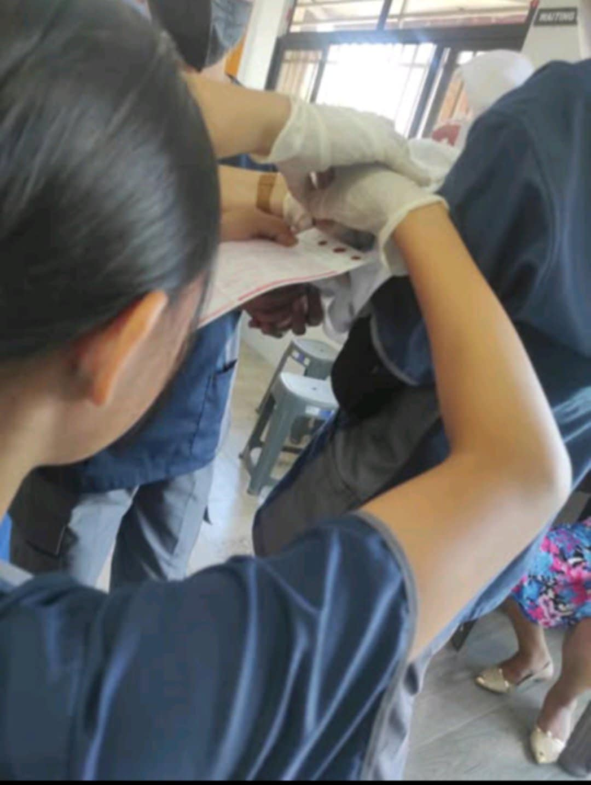

Micaela Gabriela Dofeliz
I’m a nursing student with a growing interest in OB nursing. During my clinical experience, I had the chance to see what it’s really like to be part of the labor and delivery process. It was intense, emotional, and honestly, pretty amazing. Here are three things that stood out to me the most when it comes to delivering a baby.

January 24, 2024 - new born screening
February 19, 2023 -New Born care
January 9, 2025 -labor and delivery
Key Lessons Learned
- Every birth is different: One of the biggest things I realized is that no two deliveries go exactly the same. Some happen quickly and smoothly, others take hours and come with unexpected challenges. You really have to be ready for anything and stay calm no matter what.
- Communication is everything: Talking clearly with the mom, her support person, and the rest of the team makes a huge difference. When you explain what’s going on, it helps ease anxiety and builds trust. It also helps make sure everyone's on the same page, especially in fast-moving situations.
- Teamwork is essential:Delivery involves constant coordination between nurses, doctors, midwives, and even the patient’s family. Clear communication and collaboration really make a difference in outcomes.
Clinical Training Timeline
| Practice |
Professor |
Date Learned |
| New born care |
Mrs. Rose Dimaunahan |
February 19, 2023 |
| labor and delivery |
Mrs. Ansherina Aro |
January 9, 2024 |
| New born screening |
Mrs. Rose dimaunahan |
January 24, 2025 |